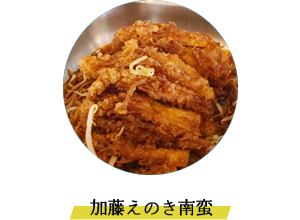
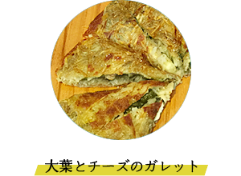
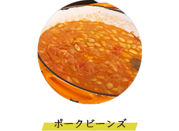

メニュー
科学調味料・添加物は使用しない
有機・無農薬の食材が中心のオーガニック料理

豚肉の甘さと、ズッキーニのさっぱりとした食感が
絶妙なバランスをとっています。

天然酵母の手ごね生地と特製ピザソースで作りました。

新玉ねぎをじっくりと焼くことで、
あまさが際立つおいしさです。

宮崎市跡江の松本さんのオーガニック米です。

手づくりマヨネーズで
とってもおいしいです。

真鯛の身をじっくりと煮込むことで、ふんわりとした食感が特徴です。

加藤えのきの甘さと、南蛮酢の酸味が絶妙なバランスをとっています。

大葉とチーズの風味がふんわりとまとまり、さっぱりとした食感が特徴です。

ポークの旨みと、ビーンズの風味がふんわりとまとまり、さっぱりとした食感が特徴です。